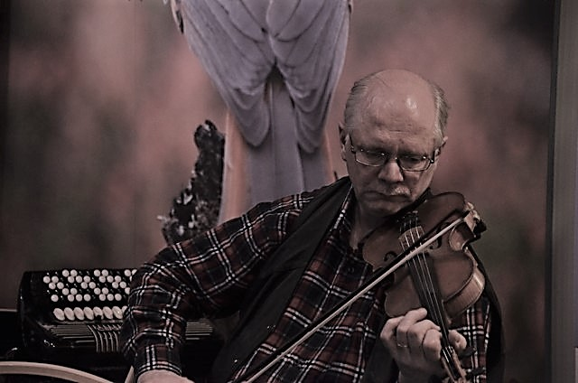

SRMY (Suomen Rytmimusiikin Ystävät ry) toimii elävän rytmimusiikin edistäjänä ja puolestapuhujana. Keskeisenä tavoitteena on tarjota kaiken ikäisille musiikinharrastajille tukea ja mahdollisuuksia erillaisen rytmimusiikin harrastamiseen ja esittämiseen. Järjestämme alan koulutusta ja rytmimusiikkitapahtumia. Tuemme monipuolisesti rytmimusiikin harrastusmahdollisuuksia ja teemme matkoja erilaisiin rytmimusiikkitapahtumiin. Aiheeseen liittyviä ehdotuksia ja ideoita otetaan ilomielin vastaan. Tervetuloa nettisivuillemme ja myös mukaan muuhun toimintaamme!
 Yhdistyksen toiminta: Yhdistyksen tarkoituksena on herättää, ylläpitää ja kehittää rytmimusiikkikulttuuria ja rytmimusiikin harrastusta, toimia rytmimusiikkitarpeen tyydyttämiseksi ja siihen perustuvan harrastustoiminnan kehittämiseksi, koota eri ikäisiä rytmimusiikin harrastajia yhteiseen toimintaan ja edistää harjoitus- ja harrastusmahdollisuuksien sekä esiintymistilaisuuksien järjestämistä eri-ikäisille ja erityyppisille esiintyjärymille.
{kind=link}